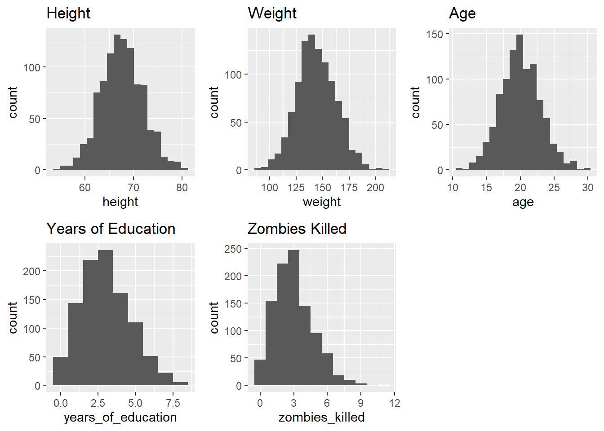
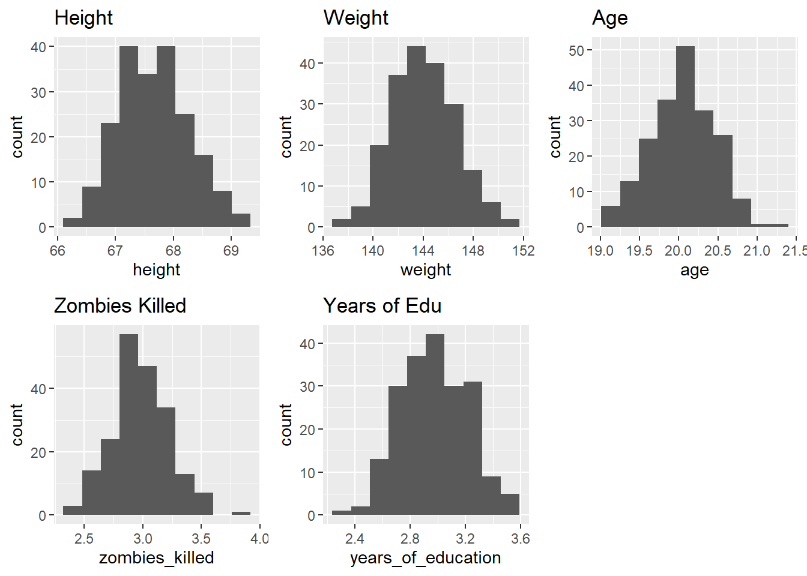

── Attaching core tidyverse packages ──────────────────────── tidyverse 2.0.0 ──
✔ dplyr 1.1.4 ✔ readr 2.1.5
✔ forcats 1.0.0 ✔ stringr 1.5.1
✔ ggplot2 3.5.1 ✔ tibble 3.2.1
✔ lubridate 1.9.4 ✔ tidyr 1.3.1
✔ purrr 1.0.2
── Conflicts ────────────────────────────────────────── tidyverse_conflicts() ──
✖ dplyr::filter() masks stats::filter()
✖ dplyr::lag() masks stats::lag()
ℹ Use the conflicted package (<http://conflicted.r-lib.org/>) to force all conflicts to become errors
library(usethis)library(radiant)
Loading required package: radiant.data
Loading required package: magrittr
Attaching package: 'magrittr'
The following object is masked from 'package:purrr':
set_names
The following object is masked from 'package:tidyr':
extract
Attaching package: 'radiant.data'
The following object is masked from 'package:magrittr':
set_attr
The following objects are masked from 'package:lubridate':
month, wday
The following object is masked from 'package:forcats':
as_factor
The following object is masked from 'package:purrr':
is_double
The following object is masked from 'package:ggplot2':
diamonds
The following object is masked from 'package:base':
date
Loading required package: radiant.design
Loading required package: radiant.basics
Loading required package: radiant.model
Loading required package: radiant.multivariate
library(mosaic)
Registered S3 method overwritten by 'mosaic':
method from
fortify.SpatialPolygonsDataFrame ggplot2
The 'mosaic' package masks several functions from core packages in order to add
additional features. The original behavior of these functions should not be affected by this.
Attaching package: 'mosaic'
The following object is masked from 'package:Matrix':
mean
The following objects are masked from 'package:radiant.data':
n_missing, prop
The following objects are masked from 'package:dplyr':
count, do, tally
The following object is masked from 'package:purrr':
cross
The following object is masked from 'package:ggplot2':
stat
The following objects are masked from 'package:stats':
binom.test, cor, cor.test, cov, fivenum, IQR, median, prop.test,
quantile, sd, t.test, var
The following objects are masked from 'package:base':
max, mean, min, prod, range, sample, sum
library(cowplot)
Attaching package: 'cowplot'
The following object is masked from 'package:mosaic':
theme_map
The following object is masked from 'package:lubridate':
stamp
##visually there is a positive correlation between height and weight compared with age for both genders. On average males seem to have greater height and weight, although this is more evident in height than weight.p_height_hist <-ggplot(data = survivors, aes(x=height)) +geom_histogram(bins =20) +ggtitle("Height")p_weight_hist <-ggplot(data = survivors, aes(x=weight)) +geom_histogram(bins =20) +ggtitle("Weight")p_age_hist <-ggplot(data = survivors, aes(x=age)) +geom_histogram(bins =20) +ggtitle("Age")p_kills_hist <-ggplot(data = survivors, aes(x=zombies_killed)) +geom_histogram(binwidth =1) +ggtitle("Zombies Killed")p_edu_hist <-ggplot(data = survivors, aes(x=years_of_education)) +geom_histogram(binwidth =1) +ggtitle("Years of Education")plot_grid(p_height_hist, p_weight_hist, p_age_hist, p_edu_hist, p_kills_hist, nrow =2)

##height, weight, and age seem to be normally distributed while years of edu and zombies killed seem not be normally distributedset.seed(1)s <- survivors |>sample_n(size =50, replace =FALSE)samp_1_means <- s |> dplyr::summarise(across(.cols =c(height, weight, age, zombies_killed, years_of_education),.fns =~mean(.)))samp_1_SDs <- s |> dplyr::summarise(across(.cols =c(height, weight, age, zombies_killed, years_of_education),.fns =~sd(.)))samp_1_SE <- s |> dplyr::summarise(across(.cols =c(height, weight, age),.fns =~ (sd(.)/50)),across(.cols =c(zombies_killed, years_of_education),.fns =~(sqrt(mean(.)/50))))samp_1_CI <- s |> dplyr::summarise(across(.cols =c(height, weight, age, zombies_killed, years_of_education),.fns =~ (mean(.) +c(-1,1) *qnorm(1- .05/2) *se(.))))
Warning: Returning more (or less) than 1 row per `summarise()` group was deprecated in
dplyr 1.1.0.
ℹ Please use `reframe()` instead.
ℹ When switching from `summarise()` to `reframe()`, remember that `reframe()`
always returns an ungrouped data frame and adjust accordingly.
## the standard error of the first sample of 50 is noticeably smaller compared to the stdev of the sampling distributionp_samp_height <-ggplot(data = all_samp_dist, aes(x=height)) +geom_histogram(bins =10) +ggtitle("Height")p_samp_weight <-ggplot(data = all_samp_dist, aes(x=weight)) +geom_histogram(bins =10) +ggtitle("Weight")p_samp_age <-ggplot(data = all_samp_dist, aes(x=age)) +geom_histogram(bins =10) +ggtitle("Age")p_samp_kills <-ggplot(data = all_samp_dist, aes(x=zombies_killed)) +geom_histogram(bins =10) +ggtitle("Zombies Killed")p_samp_edu <-ggplot(data = all_samp_dist, aes(x=years_of_education)) +geom_histogram(bins =10) +ggtitle("Years of Edu")plot_grid(p_samp_height, p_samp_weight, p_samp_age, p_samp_kills, p_samp_edu)

##These now seem pretty normal, but the ones that weren't normal before are kinda gross (outliers, bimodal)ci_quant <-function(x, level =0.95){ ci <-quantile(x, c((1-level)/2, 1- (1-level)/2)) |>round(3) ci <-paste0("[", ci[1], "-", ci[2], "]")names(ci) <-"CI"return(ci)}samp_dist_CI <- dplyr::summarise(all_samp_dist, across(.cols =everything(),.fns =~quantile(., c((1-0.95)/2, 1- (1-0.95)/2))))
Warning: Returning more (or less) than 1 row per `summarise()` group was deprecated in
dplyr 1.1.0.
ℹ Please use `reframe()` instead.
ℹ When switching from `summarise()` to `reframe()`, remember that `reframe()`
always returns an ungrouped data frame and adjust accordingly.
##the confidence intervals between the first sample and the sampling distribution aren't greatly differentyarr_booty <-function(x){ boot <-NULLfor (i in1:1000) { boot[i] <-mean(sample(x, length(x), replace =TRUE)) } ci <-quantile(boot, c(.05/2, 1-.05/2))}CI_boot_samp <- s |> dplyr::summarise(across(.cols =c(height, weight, age, zombies_killed, years_of_education),.fns =~yarr_booty(.)))
Warning: Returning more (or less) than 1 row per `summarise()` group was deprecated in
dplyr 1.1.0.
ℹ Please use `reframe()` instead.
ℹ When switching from `summarise()` to `reframe()`, remember that `reframe()`
always returns an ungrouped data frame and adjust accordingly.